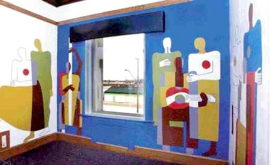

William Perehudoff painted 11 different murals on the walls of the executive suite of the old Intercontinental Packers building in the 1950's. The building was demolished to make room for a freeway, and the murals were in danger of being destroyed as well. Luckily, the murals were saved thanks to contributions from several different people and organizations, and are currently awaiting a new home.
